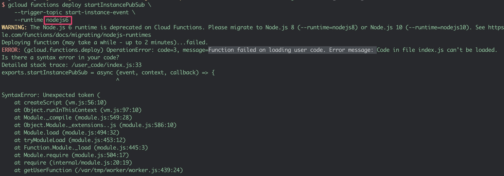

[GCP] Cloud Scheduler 統一關機VM Instance | Cloud Scheduler Saving GCP Cost
Agenda
前題
要讓機器自動關機的方法很多，linux crontab是一種，但仔細想想它是適用於單一台機器。假設我們的情況是一個cluster，它運行多台，你當然可以寫script都讓他們自動關機
不過用不同的關機指令或方法，有不同的關機速度像是OS level、Instance console，因為每台VM Instances內服務不同，關閉的速度當然也不同
因此本實作透過console level 著手達成統一關機的動作
說明instance對於各種action的反應時間(by: GCP VM instance Modules)
Console Stop 關機方式
今天要使用的是Console Stop方式，停止執行個體會導致 Compute Engine 將 ACPI 關機訊號傳送至執行個體。現行訪客作業系統都設定為在關機之前執行乾淨關機作業以回應關機訊號。 Compute Engine 會等待一小段時間，讓訪客完成關機，然後將執行個體轉換至 TERMINATED 狀態
OS 層級Shutdown VM instance
sudo shutdown -h now使用Cloud Scheduler來協助關機
簡單說它就是在GCP上的crontab，對instance來說是外部的鬧鐘。它的好處是你可以統一對GCP上所有的instance做一次性的操作。要完成這個實作，我們還需要結合Cloud Pub/Sub、Cloud Function來完整自動化開機/關機的程序
目標
- 指定VM Instance 設定
label，設定Cloud Pub/Sub topic - 部署Cloud Function，使用
Nodo.jscode 去控制你的VM Instances - 透過Cloud Scheduler建立一個時間表，使VM Instances按時間開關機
架構圖說明
Compute Engine Instance：最右邊是接受控管VM Instances
Cloud Functions functions：承載一個簡單函式，執行開/關機程式
Pub/Sub messages：訊息傳送的角色，把VM上的label 傳送給Cloud function
Cloud Scheduler jobs：GCP上的定時器，時間一到會執行目標上的Cloud function
啟用Cloud Scheduler API & Cloud Function API
首先，要使用之前我們要先產出credential 給Cloud function API 和Cloud Scheduler API做使用
# Enable API
$gcloud services enable <SERVICE_NAME>
- cloudfunctions.googleapis.com
- cloudscheduler.googleapis.com
$gcloud services enable cloudfunctions.googleapis.com
$gcloud services enable cloudscheduler.googleapis.com
# Check Enabled Current API
$ gcloud services list --available | grep -E 'Scheduler | Functions'
cloudfunctions.googleapis.com Cloud Functions API
cloudscheduler.googleapis.com Cloud Scheduler API執行結果看到 Scheduler, Functions都是available
你可以到GCP Console 進行設定
路徑如下： IAM → APIs & Services → Credentials
怎麼樣讓Cloud Function認得你的機器呢？ → Labels
這裡使用的方法是在指定的VM Instances，加上labels，它是一個**key:value**格式
我的要控制的cluster是kubernetes cluster，因此使用 env:k8s 當作labels
使用cloud shell 新增labels，並篩選機器 label 為
env:k8sKubernetes一共有3台instance，記得都要上
labels補充一下
labels和metadata是不一樣的東西喔Sample
Labels can be used to identify the instance and to filter them.
To find a instance labeled with key-value pair k1, v2
可以先讀一下範例說明
$gcloud beta compute instances add-labels example-instance \
--labels=k0=v0,k1=v1$gcloud compute instances list –filter=’labels.k1:v2’
Label env=k8s
label套用到我的環境
$gcloud beta compute instances add-labels k8s-master \
--zone=us-central1-a \ --labels=env=k8s$gcloud compute instances list –filter=’labels.env:k8s’
執行結果看到
透過labels.env:k8s篩選出我們要看的VM Instance
你可以到GCP Console 進行檢查Labels
建立 Pub/Sub topics
建立二筆topic，一個給開機用另一則是關機用，名字分別為start-instance-event、stop-instance-event
# 建立二個 topics: start & stop
$gcloud pubsub topics create start-instance-event
$gcloud pubsub topics create stop-instance-event
# 檢視現有的topic
$gcloud pubsub topics list
---
name: projects/tw-rd-ca-joe-huang/topics/start-instance-event
---
name: projects/tw-rd-ca-joe-huang/topics/stop-instance-event建好之後，檢視Pub/Sub發現有二筆topic
代表建立成功
建立Start and Stop Cloud Functions
先下載Git，看他的程式碼邏輯跟剛才測試的
labels是一樣的用預寫好的node.js 部署
Cloud Function下載 node.js code
裡面有控制function 可以對instance開關機
git clone https://github.com/GoogleCloudPlatform/nodejs-docs-samples.git
# 切換正確目錄
cd nodejs-docs-samples/functions/scheduleinstance/
# 部署Cloud Function
gcloud functions deploy startInstancePubSub \
--trigger-topic start-instance-event \
--runtime nodejs8node.js 部份功能
exports.startInstancePubSub = async (event, context, callback) => {
try {
const payload = _validatePayload(
JSON.parse(Buffer.from(event.data, 'base64').toString())
);
const options = {filter: `labels.${payload.label}`}; # 用label篩選指定的vm
const [vms] = await compute.getVMs(options);
await Promise.all(
vms.map(async instance => {
if (payload.zone === instance.zone.id) {
const [operation] = await compute
.zone(payload.zone)
.vm(instance.name)
.start(); # start()函數來啟動vm
// Operation pending
return operation.promise();
}
})
);Payload
Multi Payload
看看能不能管理多個lael，意思就是可以管理不多的instances
node.js 6 BUG
Error message: Code in file index.js can’t be loaded

設定Cloud Scheduler
如何定義一個排程時間，設定日期的規則很像Linux crontab
Cloud Schedule列出5個欄位「分」、「時」、「天」、「月」、「週」

Cloud Scheduler 設定例子
- 每分鐘執行：
* * * * * - 每週一早上九點執行：
0 9 * * 1 - 每週早上九點執行：
0 9 * * - 每3小時執行：
0 */3 * * * - 每週一早上十點40分執行：
40 10 * * 1 - 每週早上十點40分執行：
40 10 * * * - 上班工作日開機，下班時間請執行：
0 7,18 * * 1-5
手動測試
建議在使用Cloud Scheduler之前，可以先手動觸發Cloud function
如此可以減少Scheduler設定錯誤，而造成時間等待的浪費
注意這邊傳入function的值需要經過加密，因此使用
base64把加密過的值帶入 —data{
encrpted data}因為現在是關機的狀態，要使用Cloud functions call startInstancePubSub
$echo ‘{“zone”:”us-central1-a”, “label”:”env=k8s”}’ | base64
eyJ6b25lIjoidXMtY2VudHJhbDEtYSIsICJsYWJlbCI6ImVudj1rOHMifQo=直接手動觸發(開機)
$gcloud functions call startInstancePubSub \
--data '{"data":"eyJ6b25lIjoidXMtY2VudHJhbDEtYSIsICJsYWJlbCI6ImVudj1rOHMifQo="}'executionId: e7o6dafufthu
執行function成功，幫我們開機
result: Successfully started instance(s)
檢視機器狀態
$for vm in k8s-master k8s-node-1 k8s-node-2; do gcloud compute instances describe $vm \
--zone us-central1-a \ | grep status; donestatus: RUNNING
status: RUNNING
status: RUNNING
執行結果看到，三台VM Instance有正常運行中
先看現況VM的狀態(關機)
# joe.huang @ joehuangs-MacBook-Pro in ~ on git:master x [10:29:39] C:1 $ for vm in k8s-master k8s-node-1 k8s-node-2; do gcloud compute instances describe $vm \ --zone us-central1-a \ | grep status; done status: RUNNING status: RUNNING status: RUNNING
正式測試
- 透過Cloud Scheduler 自動觸發 stop-dev-instances
- 方才我們驗證了Cloud function 可以正常工作， 與辨識VM Instance label:
env:k8s - 再來就是要驗證Scheduler + Cloud function，把時間設定為
期望的時間
注意：
現在時間是10:37且VM處於開機狀態，我們要設定10:48關機
Cloud Shell 範本
# Sample
gcloud beta scheduler jobs create pubsub startup-dev-instances \
--schedule '0 9 * * 1-5' \
--topic start-instance-event \
--message-body '{"zone":"us-west1-b", "label":"env=dev"}' \
--time-zone 'America/Los_Angeles'
# 設定 10點48分鐘關機
gcloud beta scheduler jobs create pubsub stop-dev-instances \
--schedule '48 10 * * *' \
--topic start-instance-event \
--message-body '{"zone":"us-central1-a", "label":"env=k8s"}' \
--time-zone 'Asia/Taipei'確實執行完task喔
# joe.huang @ joehuangs-MacBook-Pro in ~ on git:master x [10:47:20]
$ for vm in k8s-master k8s-node-1 k8s-node-2; do gcloud compute instances describe $vm \
--zone us-central1-a \
| grep status; done
status: TERMINATED
status: TERMINATED
status: TERMINATED執行結果看到
三台VM Instance有已被終止運行
查看Cloud Scheduler Job Log
最後我們查看log，看看他的執行的過程
我們可以看到10:48香港時間，執行了stop-dev-instances
- type: “type.googleapis.com/google.cloud.scheduler.logging.AttemptFinished”
- jobName: “projects/tw-rd-ca-joe-huang/locations/asia-east2/jobs/start-stop-vm”
- pubsubTopic: “projects/tw-rd-ca-joe-huang/topics/
stop-instance-event“